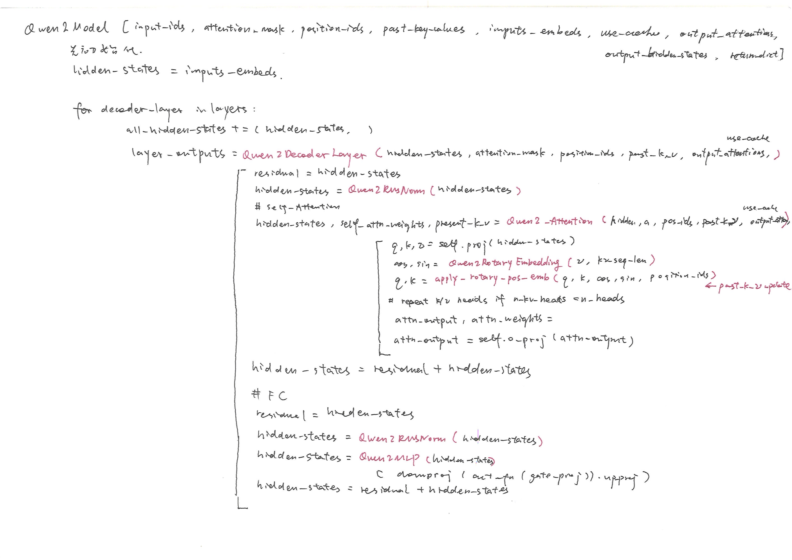
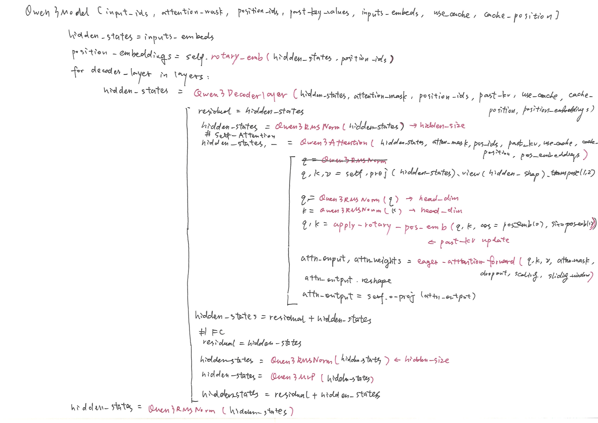
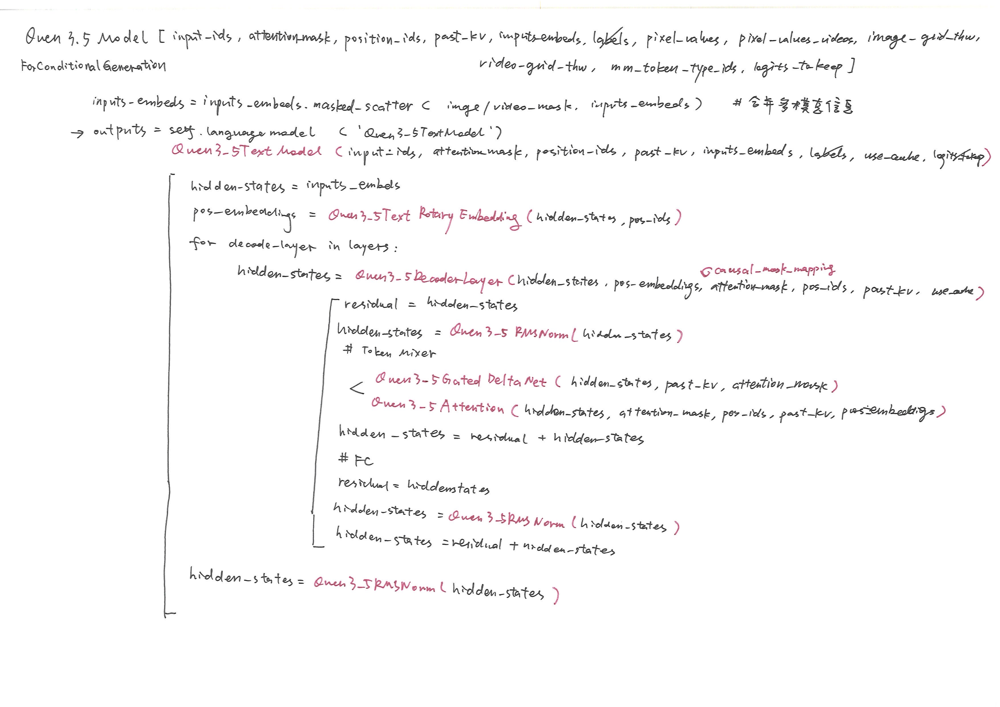
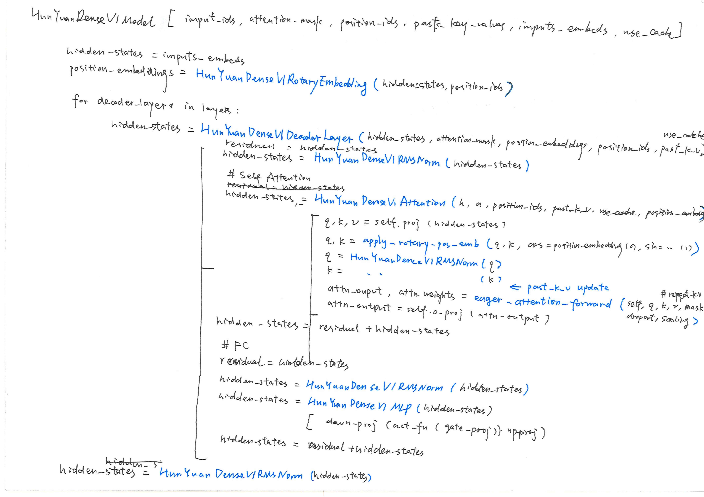

AI Infra自查list; 投机推理; Modern RL Methods
Reinforcement Learning Basics
总结了强化学习（Columbia University ORCS6529, Prof. Shipra Agrawal）这门课的内容，主要是MDP与policy learning基础、以及Q-value based learning、Policy gradient算法和在马尔科夫假设下的理论证明。
LLM 推理相关细节（主要是Infra角度）
LLM 推理相关细节（主要是Infra角度）
手写LLM结构



